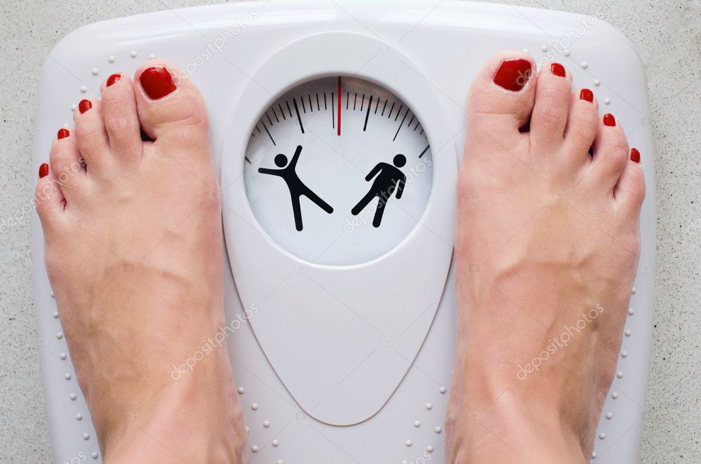

Malignant and Other Tumours
Malignant tumours are cancerous and develop when cells grow without any control. It can grow to other parts of the body and spread as well making it life-threatening.
A tumor is an abnormal growth of body tissue. Tumors can be cancerous (malignant) or noncancerous (benign).In general, tumors occur when cells divide and grow excessively in the body. Normally, the body controls cell growth and division. New cells are created to replace older ones or to perform new functions. Cells that are damaged or no longer needed die to make room for healthy replacements.
If the balance of cell growth and death is disturbed, a tumor may form. The person may feel a tumour while often it is detected via imaging tests like MRI. Let us read about the symptoms, causes, and ways to prevent it below-
Symptoms of Malignant and Other Tumours
In the early stages, malignant tumours usually don’t show any symptoms. The first symptom is usually a painless lump.
If the lump has solid components, due to tissue rather than liquid or air, it could be either benign or malignant. However, the only way to confirm whether a cyst or tumor is cancerous is to have it biopsied by your doctor. This involves surgically removing some or all of the lump.
Causes of Malignant and Other Tumours
Causes of malignant and other tumours include:
Ionising radiation
There are reasons why people are concerned that cell phones (also known as “mobile” or “wireless” telephones) might have the potential to cause certain types of cancer or other health problems:
Cell phones emit radiofrequency radiation (radio waves), a form of non-ionizing radiation, from their antennas. Parts of the body nearest to the antenna can absorb this energy.
The number of cell phone users has increased rapidly. There were over 400 million cell phone subscribers in the United States in 2017, according to the Cellular Telecommunications and Internet AssociationExit Disclaimer. Globally, there are more than 5 billion cell phone usersExit Disclaimer.
Genetics
Cancer is a genetic disease—that is, cancer is caused by certain changes to genes that control the way our cells function, especially how they grow and divide.
Genes carry the instructions to make proteins, which do much of the work in our cells. Certain gene changes can cause cells to evade normal growth controls and become cancer. For example, some cancer-causing gene changes increase production of a protein that makes cells grow. Others result in the production of a misshapen, and therefore nonfunctional, form of a protein that normally repairs cellular damage.Genetics is a branch of biology concerned with the study of genes, genetic variation, and heredity in organisms.
Pathogen

infectious agents play an aetiologic role in approximately 20% of cancer cases worldwide. At least, more than ten pathogens, including viruses, parasites, and bacteria are known to contribute to oncogenesis either directly via the expression of their protein products or indirectly via chronic inflammation.Bacteria are very small living things that are made up of only one cell. Most types of bacteria aren’t harmful, but some can infect people and cause diseases. A few have even been linked with cancer.
Preventive Measures of Malignant and Other Tumours
Preventive measures of malignant and other tumours are-
Quit tobacco
If you or a loved one has been diagnosed with cancer, quitting tobacco use is one of the best ways to improve the chances of successful cancer treatment. Some people believe that it is too late to quit after a cancer diagnosis, that the damage has already been done.If you or a loved one has been diagnosed with cancer, quitting tobacco use is one of the best ways to improve the chances of successful cancer treatment. Some people believe that it is too late to quit after a cancer diagnosis, that the damage has already been done.It is never too late to quit smoking.People who quit smoking after a cancer
Eat healthy food
Eating vegetables containing carotenoids, such as carrots, Brussels sprouts, and squash, may reduce the risk of lung, mouth, pharynx, and larynx cancers. Diets high in non-starchy vegetables, such as broccoli, spinach, and beans, may help protect against stomach and esophageal cancer.A healthy lifestyle involves many choices. Among them, choosing a balanced diet or healthy eating plan. So how do you choose a healthy eating plan? Let’s begin by defining what a healthy eating plan is.A healthy eating plan that helps you manage your weight includes a variety of foods you may not have considered. If “healthy eating” makes you think about the foods you can’t have, try refocusing on all the new foods you can eat
Get regular immunisation
Antigens are substances on the surface of cells that are not normally part of the body. The immune system attacks the antigens, usually getting rid of them. This leaves the immune system with a “memory” that helps it respond to those antigens in the future.
Cancer treatment vaccines boost the immune system's ability to recognize and destroy antigens. Often, cancer cells have certain molecules called cancer-specific antigens on their surface that healthy cells do not have.Immunization (vaccination) is a way to create immunity to (protection from) some diseases. This is done by using small amounts of a killed or weakened germ that causes the disease.
Germs can be viruses (such as the measles virus) or bacteria (such as pneumococcus). Vaccines stimulate the immune system to react as if there were a real infection.
Maintain a healthy body weight

You can lower your risk of cancer by enjoying a healthy diet, being physically active every day and maintaining a healthy body weight. Studies show being overweight, physically inactive and not eating well increases your risk of developing cancer.
The symptoms and diets may vary from patient to patient. It is advisable to consult a doctor if you are having these symptoms.
Although the life-threatening diseases that we just talked about can be prevented and treated, in case the supplies are not readily available or if the response is not quick, these may even cause deaths.
As the risk is high, we should not compromise on the precautionary measures as well, of which buying critical illness coverage is one. Having a comprehensive health insurance plan assures you good quality treatment in the time of emergency.